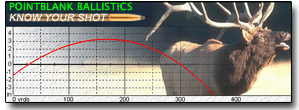
Welcome to PointBlank v2.0!
This is the general Help file for the program. Take a moment and browse through
Help Topics to get familiar with how the program functions.
User Interface Overview
The main menu allows selection between the Load Database and the Ballistics functions
as well as allowing the user to change settings and print.
Main Menu
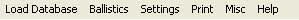
- Load Database: Selects the data management view which contains Firearm, Load and Target information.
- Ballistics: Selects the ballistics functions
- Settings: Allows the user to change the default values used in calculations.
- Metric: Toggle between Metric and SAE units
- Range Increments: Sets the ballistics table and grid data increments.
- Maximum Range: Specifies the maximum range to calculate the ballistics out to.
Note: Setting smaller increments or longer ranges take longer to compute!
- Defaults: You can change some commonly used default values in the settings menu
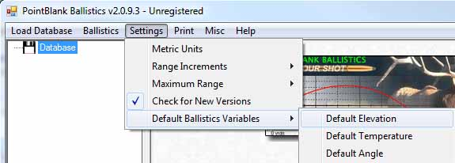
- Misc: Miscellaneous functions.
- Save Current Data: Forces a immediate save of data to disk
- v1.8a Converter: Allows importing of PointBlank v1.8a data
- Download Donation Key: Downloads a Donation key (if exists) from HuntingNut.com
- Print: Allows the user print the selected content.
- Help: Returns to this page.
Tree View
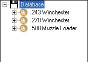
The Tree View allows for simple and easy navigation between data within the database.
It is organized by Caliber, Firearm, Load and Target. Data can be selected for viewing,
editing or for ballistics calculations by simply expanding and selecting the appropriate node.
Database Overview
The Database uses a treeview to aid in organizing firearms, reloading data and target information.
The first node within the database specifies a caliber. All subsequent information associated with
that caliber will appear as child nodes within it.
The first step in adding data to the database is to create a firearm. You will be prompted to select
a caliber for the firearm. Once the firearm is created you can then select that firearm and create loads
for that firearm, followed by targets for the load. This is all explained in the following sections.
- Calibers Overview
The calibers nodes are created as a step when new firearms are created.
- Firearms Overview
To add a new firearm, click the New Firearm button at the bottom of the treeview.
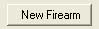
Once clicked, a menu will open allowing you to choose the caliber for the new firearm from the list.
Find the diameter of the bullet in the list, then expand the list to locate the proper caliber itself.
Once located, selecte the caliber and then click Select or Cancel to quit.
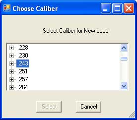
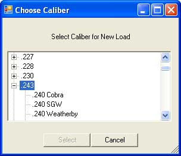
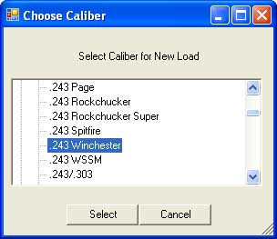
After the caliber has been selected, it will be created and added to the treeview along with a new firearm node.
The new firearm will be automatically selected and available to edit. Any fields marked in Red are used by the
ballistics functions and will remain red until a valid value is entered. It is not required to fill in all fields at
this point, however make firearm name should be something unique.
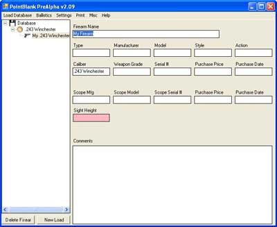
Calibers can be deleted by selecting the specific caliber then selecting the Delete Caliber button that will then become visible.
NOTE: Deleteing a caliber will delete all associated firearms, load data and target data!
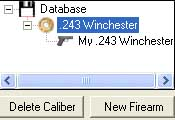
Firearms can be deleted by selecting the specific firearm then selecting the Delete Firearm button that will become visible
NOTE: Deleteing a Firearm will delete all associated load data and target data!
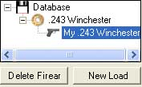
- Loads Overview
To create a load for the database, select the firearm the load belongs to and click New Load.
This will create a new load under the selected firearm and bring up the load menu. You can edit or add any load information
as needed.
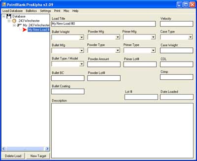
- Targets Overview
New targets are created in the same fashion as above. Select the Load you wish to add the target to, then click New Target.
This will create a new target under the selected Load and allow you to edit the target information.
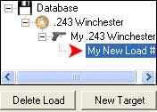
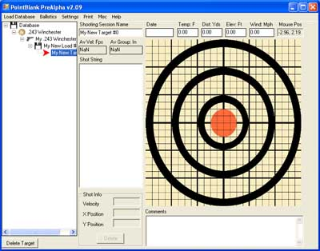
The target has information fields along the top to describe conditions at the time of shooting. Wind, Temperature, Target Distance
Elevation and Wind can all be entered along with various notes at the bottom of the menu.
Individual shots can be placed onto the target by simply right clicking the target at the appropriate position.
The current mouse position is shown in the upper right to allow for precise positioning. Placing a shot onto the
target will then bring up a menu to enter in the shot velocity.
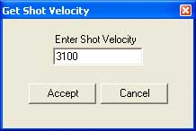
As shots are added to the target, they are shown graphically on the target, numbered in the order they are placed. They are also
shown in a list beside the target with the velocity and X / Y Positions shown. If you select a shot from the list the associated
graphical shot is highlighted in red and the shot info is editable in the data fields below the shot list box. You can edit the
data there or delete that specific shot as desired. Above the shot list box, average Velocity and Group information is updated
as shot data is changed or is added / deleted.
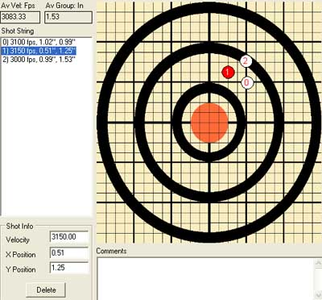
The target node can be deleted by selecting the target from the tree view and clicking Delete.
Different Target graphics can be chosen by clicking the Choose Target button on the upper right of the program.
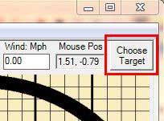
New Targets need to be square in their proportions. Targets can be BMP, JPG or PNG format. They need to be placed in the same folder
as the PointBlank.exe is run from. The visual center of the target does not have
to be set to the center of the image. This means all additional targets need to be calibrated.
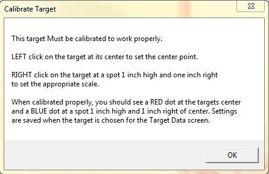
This is done by selecting the name from the left side list
which will offer a preview of the target. LEFT click with your mouse on the center of the target which will move the Red centering dot to the visual center
of the target. Right click on the target at a location 1 inch high and one inch right of the targets center to place a Blue dot.
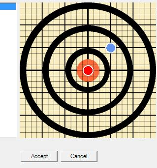
Once the red dot and the blue dots visually appear in the proper location, select the target by clicking the Accept button.
Calibration changes are only saved when a target is Accepted.
Ballistics Overview
The ballistics functions are accessable by selecting Ballistics from the main menu at the top of the program.
PointBlank uses an advanced ballistics engine to calculate bullet trajectorys over a distance according to the supplied
variables such as altitude, the bullets ballistic co-efficent, velocity etc etc. Data from these calculations is output
into several different tab views for easy access and research.
The ballistics section is organized into 3 parts with the Database Treeview on the left,
a center tab view containing Load variables information and another tab view on the right containing the
data output.
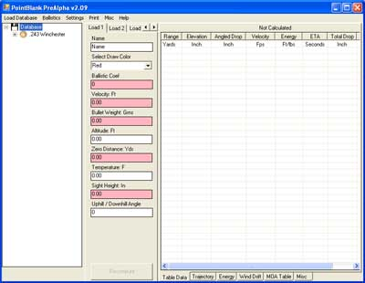
When selecting the Ballistics menu, you are presented with a Data Copy Selection option menu. This menu allows you to
quickly copy data from the Load database into the ballistics calculator. You may choose which slot to save the data
into for comparison purposes, or skip copying of data. To copy data, you simply browse to the data in the load database you
wish to compute, then choose the Ballistics Menu from the toolbar. Then select which tab of the ballistics calculator you wish
the data to be copied into.
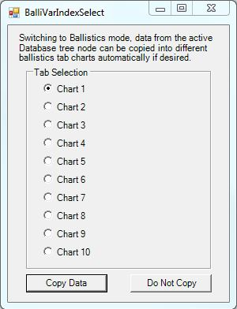
The tab views are as follows:
- Load Variables tab view
Data can be entered directly into the fields independant of load data for quick computation and comparison.
Data from a specific handload can autofill in the ballistic data fields by clicking on the desired load from
the treeview. Load nodes in the treeview do not contain target level information such as Temperature, Altitude, Velocity etc,
so those fields wont be filled in. Selecting data from Target nodes that contain valid shot information will fill in All
required ballistics information if its been entered.
The load variables in the center tab view are required for calculating a ballistic trajectory.
Any fields lacking data, or fields containing invalid / out of range data are shown in red.
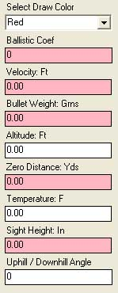
- Draw Color: The color used when drawing this loads graphical trajectory data
- Ballistic Coefficent: Manufacturers value which defines how well a bullet travels through the air
Valid ranges are between .020 and 5.0
- Velocity: The speed of the bullet as measured at the muzzle. Valid ranges are between 500 fps and 4500 fps
- Weight: Weight of the bullet in grains. Valid ranges are between 1 grn and 900 grns
- Altitude: Altitude to calculate data at. Valid ranges are between -100 ft and 20000 ft
- Zero Distance: Distance to target where the bullet strikes center. Valid ranges are between 5 yards and 2000 yards
- Temperature: Temperature to calculate data at. Valid Ranges are between -60F and 120F
- Sight Height: Height of the center of the site above center of the bore. Valid ranges are between .001 inchs and 6.0 inches
- Angle: Uphill / Downhill angle to calculate adjustments to. Valid ranges are between 1 and 90 degrees
Once all data fields have valid data, the Recompute button becomes enabled allowing calculation of the data.
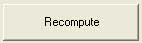
- Data Views
Data is organized into several views and is accessed by the tabs located at the bottom center of the program.
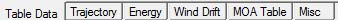
- Table Data
The Data Table view is the raw data calculated by the ballistics engine. It is organized in rows with each row
corisponding to a distance from the shooter.
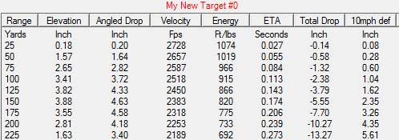
Columns data is defined as follows:
- Range: Distance from the firearm
- Elevation: Height of the bullet, relative to the horizonal line of sight to the target
- Angled Drop: Height of the bullet, relative to the angled line of sight to a target
- Velocity: Speed of the bullet, at the specified distance
- Energy: Energy of the bullet, at the specified distance
- Total Drop: This is the height of the bullet, relative to a perfectly horizonal barrel. It is the amount of total bullet drop. This is not useful to most people but does have some advanced application hence it being included here for some users.
Data from the table may be exported into a EXCEL friendly CSV format by clicking the EXPORT button in the lower right of the table.
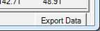
Data from the Data Table view can also be displayed in graphical format to better visualize and understand the data specified.
- Trajectory
The Trajectory view is a graphical representation of the bullets path relative to the line of sight, over distance.
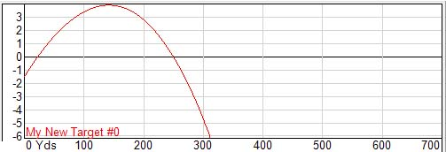
- Energy Table
The Energy Table is a graphical representation of a bullets energy at various ranges and shows how energy is dissapated over distance
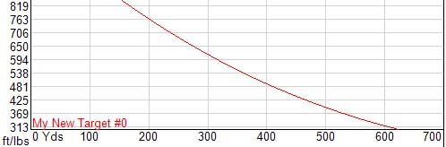
- Wind Table
The Wind Drift table shows how a bullet can drift in various side wind conditions over distance. Different wind values are color coded for easier visualization
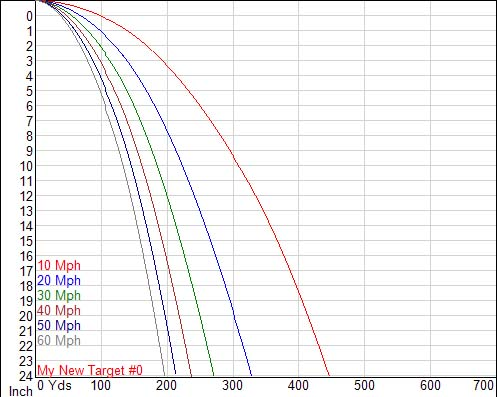
- MOA Table
The MOA table shows the "Minute of Angle" difference from one target zero distance to another.
If you are zeroed in for example, at 200 yards and would like to adjust in the field to a 250 yard zero you simply scroll down to the 200 yard row then across that row to the 250 yard column. In this example the value is 1.4 MOA which means you need to adjust the scope upwards 1.4 MOA to be zeroed at 250 yards. Consult your scopes Manual to find out how far to adjust your scope to achieve the desired MOA change.
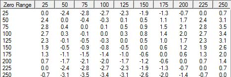
- Misc
The Point Blank Range table shows the zero and max ranges for killzones of different diameters, based on the computed bullets velocity. Point Blank range is defined as the maximum range you can shoot at a target before you have to take into account elevation adjustments. When sighted in at the specified Zero range, the path of the bullet will not exceed a height greater than killzone / 2 above the line of sight. The max range is computed where the path of the bullet first falls below the line of sight by an amount of killzone / 2.
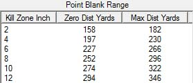
Printing Overview
Printing is simple and straight forward now in PointBlank. Simply browse to the data you wish to print and select Print from the toolbar.
You will be presented with a Print Preview dialog to view the document before printing takes place.
Importing v1.8a Databases Overview
The new version of PointBlank is organized differently than version 1.8a and stores data in a more organized and safer method. Unfortunately this means the old database is not directly compatable with the new version. Due to this an import process has been created to allow data from the older versions to be used with the new version.
The old version allowed load information and firearm information to be stored independantly from each other. In the new version loads are parented to firearm information which means that to import the old database information, the user must import the firearm data first, then import the load information. If a firearm entry doesnt exist for load information, you will be prompted to create one from the database. Firearms are imported first.
To import data, select it from the Misc Menu at the top of the program
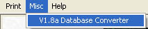
Next browse to the directory where the 1.8a databases are located (RELOADER.DAT and FIREARMS.DAT).
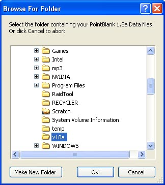
If the database files are found, the import process will begin. You will be prompted to accept or decline each found firearm and load. Data will be displayed in a popup. Choosing No will bring up the next firearm in the database.
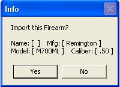
Accepting a firearm will bring up the calibers list. The old database had no knowledge of "caliber", users could enter in anything in as a caliber. Due to the new organization structure, firearms must be derived from a valid existing caliber. Scroll down and choose the appropriate caliber for this firearm
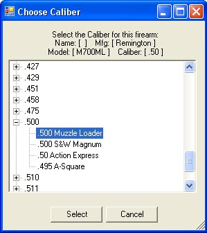
Once the caliber has been selected, you are given a chance to edit any of the firearms information before it is added to the database. You can also choose to set the type of the firearm to Pistol, Rifle or Muzzleloader
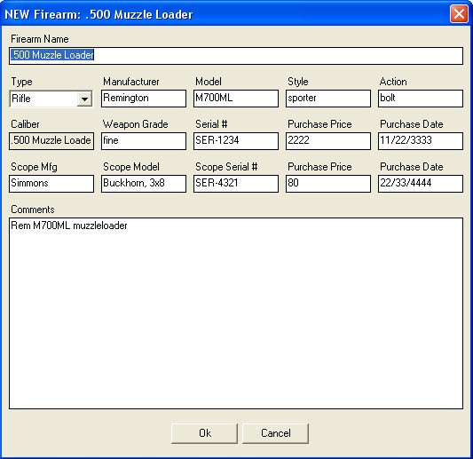
Once the firearm information has been submitted, the process will repeat for all of the firearms in the old database. After all firearms have been imported or skipped over, load information will be imported.
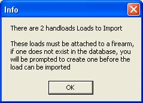
Importing Load information is similar to importing firearm information with 1 major difference. If the old database contained load information for a firearm that did not exist in the firearms database, you will be prompted to create one before the load information can be added to the database. This is for organization purposes, Loads are organized by firearm, firearms by calibers etc etc.
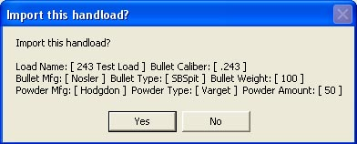
If the firearm exists for the load you are choosing to import, select it from the treeview otherwise select "Create New" to create a firearm entry for this load. In this example, .50 caliber muzzlloader firearms have been imported, but the load data to be imported is for a .243 so I will click Create New and be given menus to create a .243 firearm which this load data will then be assocated with.
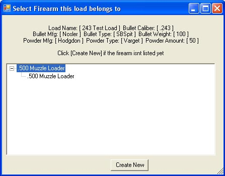
Select the proper caliber from the treeview.
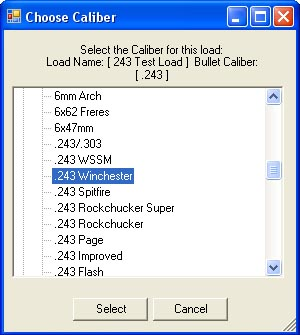
Enter in any additional information about this firearm
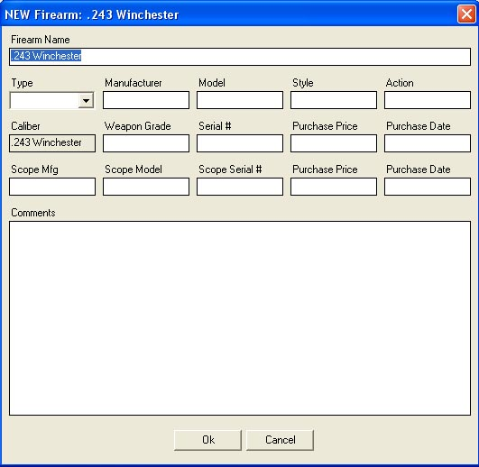
You will be returned to the caliber list and the new firearm should now appear. Select it to assign the load data to this firearm
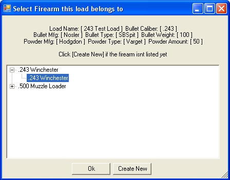
The process will now repeat for any additional loads you wish to import.
Adding Components to the database
HuntingNut.com will attempt to keep the databases updated regularly with new component information, but incase the user needs to enter in his own data, it is very simple to do. Component data is stored in simple spreadsheet *.SLK files. These files can be edited in most all spreadsheet editors. At the top of every file is information to describe the column fields. Simply insert a row where you want and fill in the proper fields.
The database files are are Bullets.slk, Cases.slk, Calibers.slk, Primers.slk and Powders.slk.
Terms and Definitions
Sectional Density
Velocity
Bullet Weight
Altitude
Temperature
Zero Distance
Sight Height
All Information Copyright 2008, HuntingNut.com